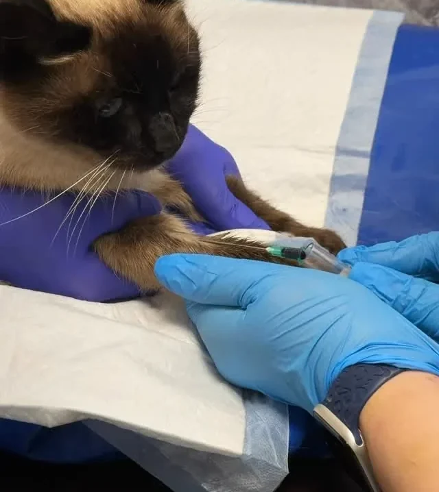
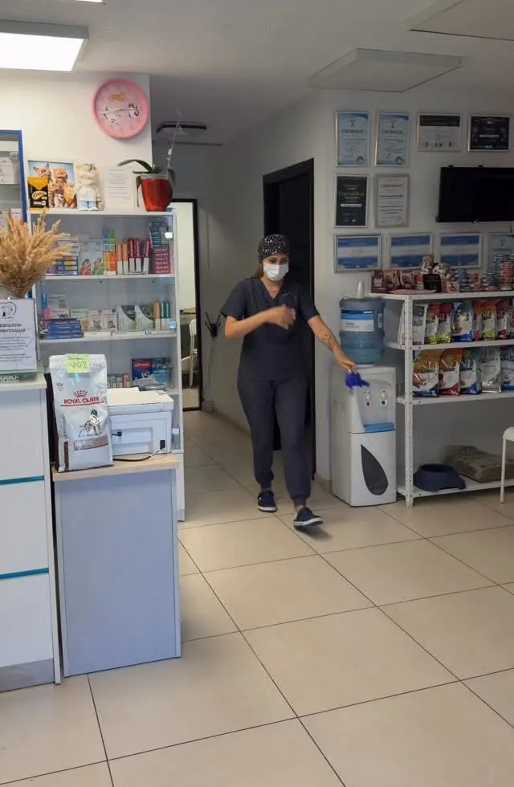
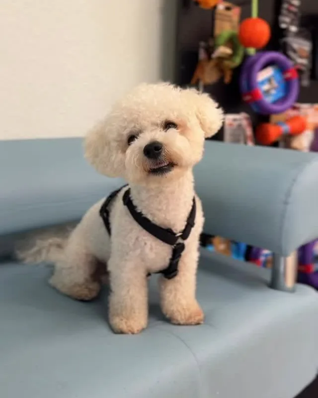
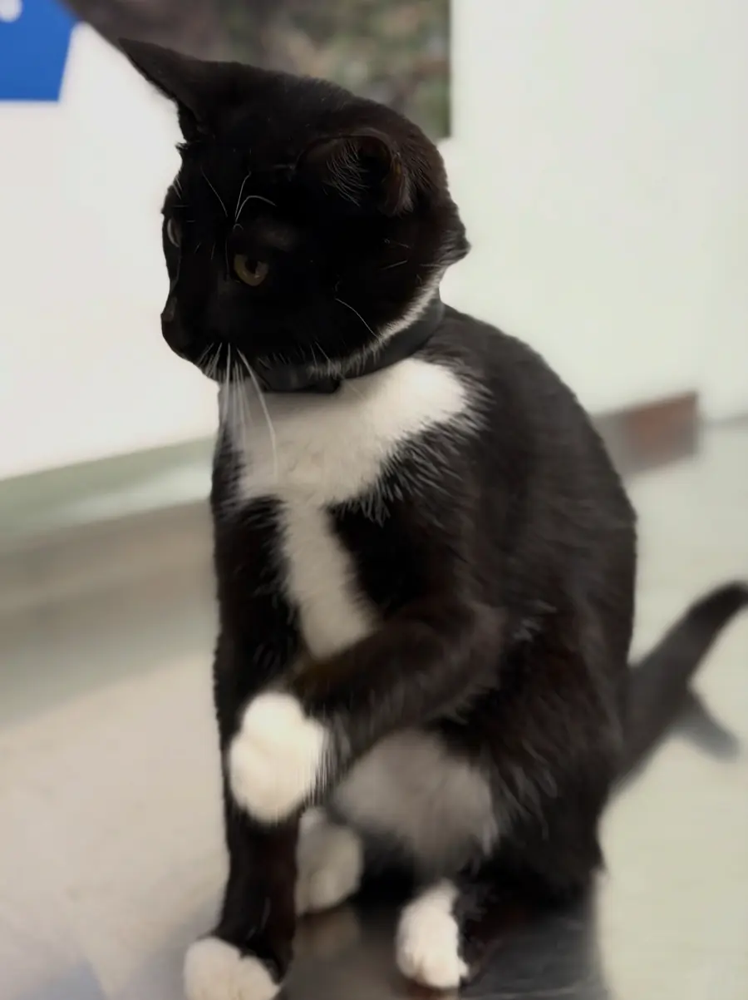
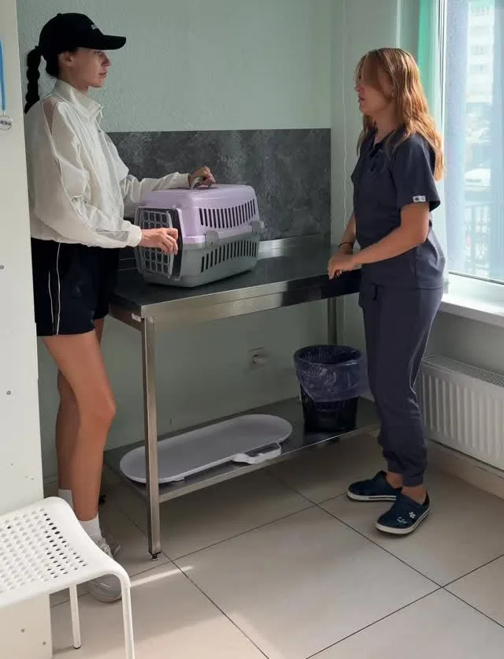
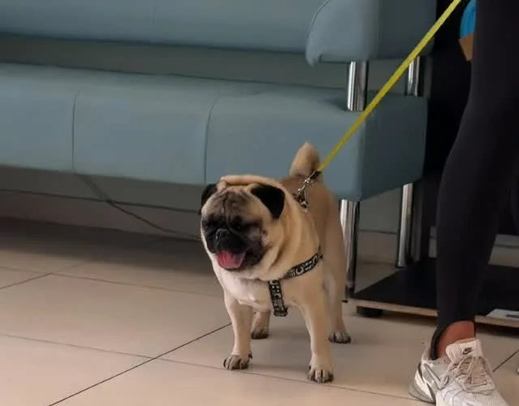
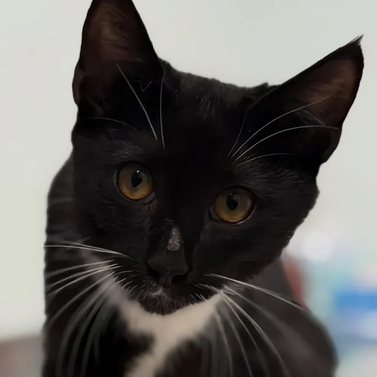

Терапевтичний прийом
Огляд, консультація лікаря та зрозумілий план лікування, коли улюбленець нездужає.
Ветеринарна клініка у Броварах
Терапія, аналізи, хірургія, стерилізація та кастрація котів і собак — на вул. Василя Симоненка, 105. Запишіться телефоном або напишіть нам в Instagram Direct.
Послуги
Від планового огляду до операції — в одному місці у Броварах. Не знаєте, до якого лікаря записатися? Зателефонуйте — підкажемо.
Огляд, консультація лікаря та зрозумілий план лікування, коли улюбленець нездужає.
Аналізи крові та обстеження показують те, чого не видно під час огляду, — і допомагають точно підібрати лікування.
Операції котам і собакам. Стерилізація та кастрація — за доступними цінами.
ДетальнішеСвербіж, вилизування, почервоніння, залисини чи запах від шкіри — консультація ветеринарного дерматолога.
Консультації щодо очей, зубів і ротової порожнини вашого улюбленця.
Щеплення, чипування та оформлення ветеринарного паспорта для вашого улюбленця.

Планові операції
Для котів, кішок і собак. Планова операція береже здоров’я улюбленця та допомагає зменшити кількість безхатніх тварин.
Вартість залежить від виду та статі тварини. Актуальну ціну й вільний час підкажемо телефоном або в Instagram Direct.
Як проходить візит
Телефонуйте 066 391 04 69 або пишіть в Instagram Direct — узгодимо зручний час.
Лікар оглядає улюбленця, розпитує про симптоми та пояснює, що відбувається.
Якщо потрібні аналізи — зробимо їх, щоб лікування було точним.
Отримуєте план лікування та поради, як доглядати за улюбленцем удома.
Коли варто прийти
Сезонне линяння — це нормально. Але деякі симптоми вже є приводом звернутися до ветеринарного дерматолога.
Записатися на консультаціюКлініка
Світло, чисто і спокійно — щоб і пацієнтам, і господарям було комфортно.






Шукає дім
Активний, допитливий і неймовірно позитивний котик. Любить увагу й точно не дасть вам нудьгувати. Готові подарувати йому дім?
Контакти